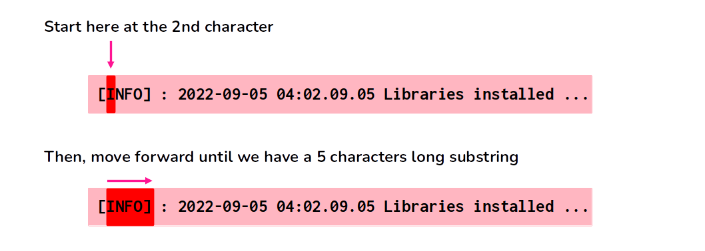
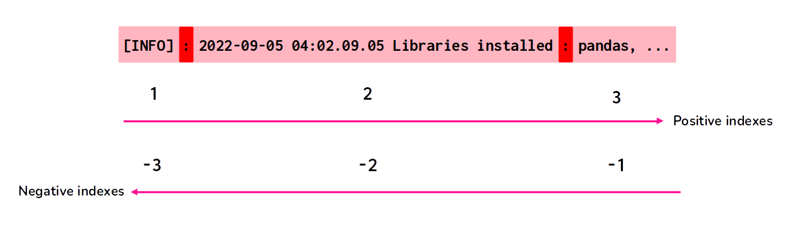
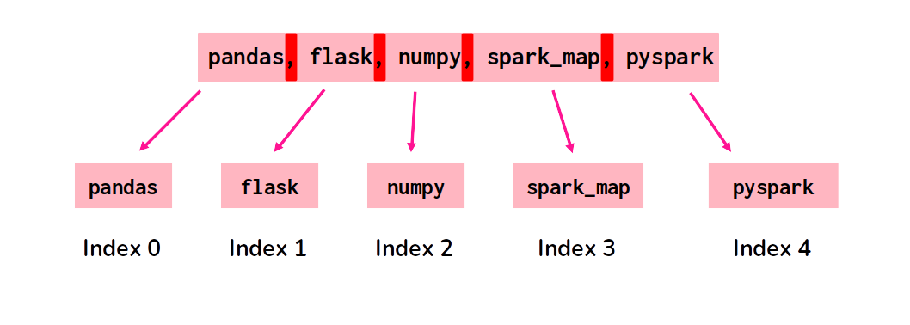
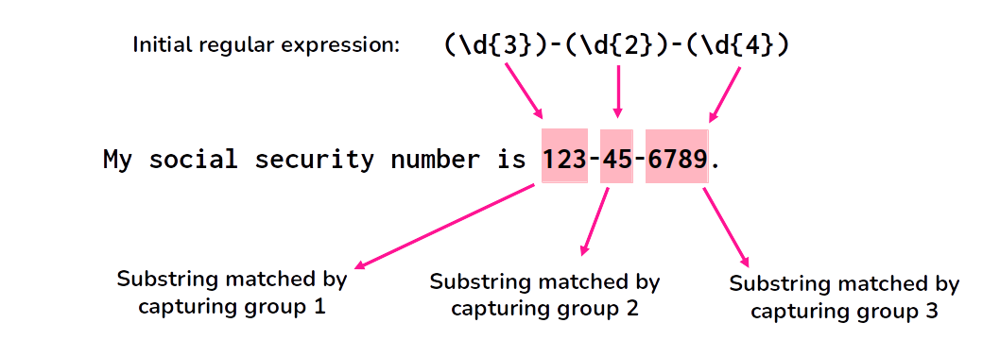

Many of the world’s data is represented (or stored) as text (or string variables). As a consequence, is very important to know the tools available to process and transform this kind of data, in any platform you use. In this chapter, we will focus on these tools.
Most of the functionality available in pyspark to process text data comes from functions available at the pyspark.sql.functions module. This means that processing and transforming text data in Spark usually involves applying a function on a column of a Spark DataFrame (by using DataFrame methods such as withColumn() and select()).
10.1 The logs DataFrame
Over the next examples in this chapter, we will use the logs DataFrame, which contains various log messages registered at a fictitious IP adress. The data that represents this DataFrame is freely available trough the logs.json file, which you can download from the official repository of this book1.
Each line of this JSON file contains a message that was recorded by the logger of a fictitious system. Each log message have three main parts, which are: 1) the type of message (warning - WARN, information - INFO, error - ERROR); 2) timestamp of the event; 3) the content of the message. In the example below, we have an example of message:
[INFO]: 2022-09-05 03:35:01.43 Looking for workers at South America region;
To import logs.json file into a Spark DataFrame, I can use the following code:
+--------------+--------------------------------------------------+
| ip| message|
+--------------+--------------------------------------------------+
| 1.0.104.27 |[INFO]: 2022-09-05 03:35:01.43 Looking for work...|
| 1.0.104.27 |[WARN]: 2022-09-05 03:35:58.007 Workers are una...|
| 1.0.104.27 |[INFO]: 2022-09-05 03:40:59.054 Looking for wor...|
| 1.0.104.27 |[INFO]: 2022-09-05 03:42:24 3 Workers were acqu...|
| 1.0.104.27 |[INFO]: 2022-09-05 03:42:37 Initializing instan...|
+--------------+--------------------------------------------------+
only showing top 5 rows
By default, when we use the show() action to see the contents of our Spark DataFrame, Spark will always truncate (or cut) any value in the DataFrame that is more than 20 characters long. Since the logs messages in the logs.json file are usually much longer than 20 characters, I am using the truncate argument of show() in the example above, to avoid this behaviour.
By setting this argument to 50, I am asking Spark to truncate (or cut) values at the 50th character (instead of the 20th). By doing this, you (reader) can actually see a much more significant part of the logs messages in the result above.
10.2 Changing the case of letters in a string
Probably the most basic string transformation that exists is to change the case of the letters (or characters) that compose the string. That is, to raise specific letters to upper-case, or reduce them to lower-case, and vice-versa.
As a first example, lets go back to the logs DataFrame, and try to change all messages in this DataFrame to lower case, upper case and title case, by using the lower(), upper(), and initcap() functions from the pyspark.sql.functions module.
from pyspark.sql.functions import ( lower, upper, initcap)m = logs.select('message')# Change to lower case:m.withColumn('message', lower('message'))\ .show(5, truncate = n_truncate)
+--------------------------------------------------+
| message|
+--------------------------------------------------+
|[info]: 2022-09-05 03:35:01.43 looking for work...|
|[warn]: 2022-09-05 03:35:58.007 workers are una...|
|[info]: 2022-09-05 03:40:59.054 looking for wor...|
|[info]: 2022-09-05 03:42:24 3 workers were acqu...|
|[info]: 2022-09-05 03:42:37 initializing instan...|
+--------------------------------------------------+
only showing top 5 rows
# Change to upper case:m.withColumn('message', upper('message'))\ .show(5, truncate = n_truncate)
+--------------------------------------------------+
| message|
+--------------------------------------------------+
|[INFO]: 2022-09-05 03:35:01.43 LOOKING FOR WORK...|
|[WARN]: 2022-09-05 03:35:58.007 WORKERS ARE UNA...|
|[INFO]: 2022-09-05 03:40:59.054 LOOKING FOR WOR...|
|[INFO]: 2022-09-05 03:42:24 3 WORKERS WERE ACQU...|
|[INFO]: 2022-09-05 03:42:37 INITIALIZING INSTAN...|
+--------------------------------------------------+
only showing top 5 rows
# Change to title case# (first letter of each word is upper case):m.withColumn('message', initcap('message'))\ .show(5, truncate = n_truncate)
+--------------------------------------------------+
| message|
+--------------------------------------------------+
|[info]: 2022-09-05 03:35:01.43 Looking For Work...|
|[warn]: 2022-09-05 03:35:58.007 Workers Are Una...|
|[info]: 2022-09-05 03:40:59.054 Looking For Wor...|
|[info]: 2022-09-05 03:42:24 3 Workers Were Acqu...|
|[info]: 2022-09-05 03:42:37 Initializing Instan...|
+--------------------------------------------------+
only showing top 5 rows
10.3 Calculating string length
In Spark, you can use the length() function to get the length (i.e. the number of characters) of a string. In the example below, we can see that the first log message is 74 characters long, while the second log message have 112 characters.
from pyspark.sql.functions import lengthlogs\ .withColumn('length', length('message'))\ .show(5)
The process of removing unnecessary spaces from strings is usually called “trimming”. In Spark, we have three functions that do this process, which are:
trim(): removes spaces from both sides of the string;
ltrim(): removes spaces from the left side of the string;
rtrim(): removes spaces from the right side of the string;
For the most part, I tend to remove these unnecessary strings when I want to: 1) tidy the values; 2) avoid weird and confusing mistakes in filters on my DataFrame. The second case is worth describing in more details.
Let’s suppose you wanted to filter all rows from the logs DataFrame where ip is equal to the 1.0.104.27 IP adress. However, you can see in the result above, that I get nothing. Not a single row of result.
from pyspark.sql.functions import collogs.filter(col('ip') =="1.0.104.27")\ .show(5)
But if you see the result of the previous example (where we appliead the three versions of “trim functions”), you know that this IP adress 1.0.104.27 exists in the DataFrame. You know that the filter above should find values for this IP adress. So why it did not find any rows?
The answer is these annoying (and hidden) spaces on both sides of the values from the ip column. If we remove these unnecessary spaces from the values of the ip column, we suddenly find the rows that we were looking for.
There are five main functions that we can use in order to extract substrings of a string, which are:
substring() and substr(): extract a single substring based on a start position and the length (number of characters) of the collected substring2;
substring_index(): extract a single substring based on a delimiter character3;
split(): extract one or multiple substrings based on a delimiter character;
regexp_extract(): extracts substrings from a given string that match a specified regular expression pattern;
You can obviously extract a substring that matches a particular regex (regular expression) as well, by using the regexp_extract() function. However, I will describe this function, and the regex functionality available in pyspark at Section 10.7, or, more specifically, at Section 10.7.5. For now, just understand that you can also use regex to extract substrings from your text data.
10.5.1 A substring based on a start position and length
The substring() and substr() functions they both work the same way. However, they come from different places. The substring() function comes from the spark.sql.functions module, while the substr() function is actually a method from the Column class.
One interesting aspect of these functions, is that they both use a one-based index, instead of a zero-based index. This means that the first character in the full string is identified by the index 1, instead of the index 0.
The first argument in both function is the index that identifies the start position of the substring. If you set this argument to, let’s say, 4, it means that the substring you want to extract starts at the 4th character in the input string.
The second argument is the amount of characters in the substring, or, in other words, it’s length. For example, if you set this argument to 10, it means that the function will extract the substring that is formed by walking \(10 - 1 = 9\) characters ahead from the start position you specified at the first argument. We can also interpret this as: the function will walk ahead on the string, from the start position, until it gets a substring that is 10 characters long.
In the example below, we are extracting the substring that starts at the second character (index 2) and ends at the sixth character (index 6) in the string.
from pyspark.sql.functions import col, substring# `df1` and `df2` are equal, because# they both mean the same thingdf1 = (logs .withColumn('sub', col('message').substr(2, 5)))df2 = (logs .withColumn('sub', substring('message', 2, 5)))df2.show(5)
Just to be very clear on how substring() and substr() both works. The Figure 10.1 illustrates the result of the above code.

Figure 10.1: How substring() and substr() works
10.5.2 A substring based on a delimiter
The substring_index() function works very differently. It collects the substring formed between the start of the string, and the nth occurrence of a particular character.
For example, if you ask substring_index() to search for the 3rd occurrence of the character $ in your string, the function will return to you the substring formed by all characters that are between the start of the string until the 3rd occurrence of this character $.
You can also ask substring_index() to read backwards. That is, to start the search on the end of the string, and move backwards in the string until it gets to the 3rd occurrence of this character $.
As an example, let’s look at the 10th log message present in the logs DataFrame. I used the collect() DataFrame method to collect this message into a raw python string, so we can easily see the full content of the message.
We can see that this log message is listing a set of libraries that were installed somewhere. Suppose you want to collect the first and the last libraries in this list. How would you do it?
A good start is to isolate the list of libraries from the rest of the message. In other words, there is a bunch of characters in the start of the log message, that we do not care about. So let’s get rid of them.
If you look closely to the message, you can see that the character : appears twice whithin the message. One close to the start of the string, and another time right before the start of the list of the libraries. We can use this character as our first delimiter, to collect the third substring that it creates within the total string, which is the substring that contains the list of libraries.
This first stage is presented visually at Figure 10.2.
Figure 10.2: Substrings produced by the : delimiter character
Now that we identified the substrings produced by the “delimiter character”, we just need to understand better which index we need to use in substring_index() to get this third substring that we want. The Figure 10.3 presents in a visual manner how the count system of substring_index() works.
When you use a positive index, substring_index() will count the occurrences of the delimiter character from left to right. But, when you use a negative index, the opposite happens. That is, substring_index() counts the occurrences of the delimiter character from right to left.

Figure 10.3: The count system of substring_index()
The index 1 represents the first substring that is before the the 1st occurence of the delimiter ([INFO]). The index 2 represents everything that is before the 2nd occurence of the delimiter ([INFO]: 2022-09-05 04:02.09.05 Libraries installed). etc.
In contrast, the index -1 represents everything that is after the 1st occurence of the delimiter, couting from right to left (pandas, flask, numpy, spark_map, pyspark). The index -2 represents everything that is after the 2nd occurence of the delimiter (2022-09-05 04:02.09.05 Libraries installed: pandas, flask, numpy, spark_map, pyspark). Again, couting from right to left.
Having all these informations in mind, we can conclude that the following code fit our first objective. Note that I applied the trim() function over the result of substring_index(), to ensure that the result substring does not contain any unnecessary spaces at both ends.
Now is a good time to introduce the split() function, because we can use it to extract the first and the last library from the list libraries of stored at the mes_10th DataFrame.
Basically, this function also uses a delimiter character to cut the total string into multiple pieces. However, this function stores these multiple pieces (or multiple substrings) into an array of substrings. With this strategy, we can now access each substring (or each piece of the total string) individually.
If we look again at the string that we stored at the list_of_libraries column, we have a list of libraries, separated by a comma.
The comma character (,) plays an important role in this string, by separating each value in the list. And we can use this comma character as the delimiter inside split(), to get an array of substrings. Each element of this array is one of the many libraries in the list. The Figure 10.4 presents this process visually.

Figure 10.4: Building an array of substrings with split()
The code to make this process is very straightforward. In the example below, the column array_of_libraries becomes a column of data type ArrayType(StringType), that is, an array of string values.
By having this array of substring, we can very easily select a specific element in this array, by using the getItem() column method, or, by using the open brackets as you would normally use to select an element in a python list.
You just need to give the index of the element you want to select, like in the example below that we select the first and the fifth libraries in the array.
Sometimes, we need to concatenate multiple strings together, to form a single and longer string. To do this process, Spark offers two main functions, which are: concat() and concat_ws(). Both of these functions receives a list of columns as input, and will perform the same task, which is to concatenate the values of each column in the list, sequentially.
However, the concat_ws() function have an extra argument called sep, where you can define a string to be used as the separator (or the “delimiter”) between the values of each column in the list. In some way, this sep argument and the concat_ws() function works very similarly to the join() string method of python4.
Let’s comeback to the penguins DataFrame to demonstrate the use of these functions:
Suppose you wanted to concatenate the values of the columns species, island and sex together, and, store these new values on a separate column. All you need to do is to list these columns inside the concat() or concat_ws() function.
If you look at the example below, you can see that I also used the lit() function to add a underline character (_) between the values of each column. This is more verbose, because if you needed to concatenate 10 columns together, and still add a “delimiter character” (like the underline) between the values of each column, you would have to write lit('_') for 9 times on the list.
In contrast, the concat_ws() offers a much more succinct way of expressing this same operation. Because the first argument of concat_ws() is the character to be used as the delimiter between each column, and, after that, we have the list of columns to be concatenated.
from pyspark.sql.functions import ( concat, concat_ws, lit)penguins\ .withColumn('using_concat', concat('species', lit('_'), 'island', lit('_'), 'sex') )\ .withColumn('using_concat_ws', concat_ws('_', # The delimiter character'species', 'island', 'sex'# The list of columns ) )\ .select('using_concat', 'using_concat_ws')\ .show(5, truncate = n_truncate)
+-----------------------+-----------------------+
| using_concat| using_concat_ws|
+-----------------------+-----------------------+
| Adelie_Torgersen_male| Adelie_Torgersen_male|
|Adelie_Torgersen_female|Adelie_Torgersen_female|
|Adelie_Torgersen_female|Adelie_Torgersen_female|
| NULL| Adelie_Torgersen|
|Adelie_Torgersen_female|Adelie_Torgersen_female|
+-----------------------+-----------------------+
only showing top 5 rows
If you look closely to the result above, you can also see, that concat() and concat_ws() functions deal with null values in different ways. If concat() finds a null value for a particular row, in any of the listed columns to be concatenated, the end result of the process is a null value for that particular row.
On the other hand, concat_ws() will try to concatenate as many values as he can. If he does find a null value, he just ignores this null value and go on to the next column, until it hits the last column in the list.
10.7 Introducing regular expressions
Spark also provides some basic regex (regular expressions) functionality. Most of this functionality is available trough two functions that comes from the pyspark.sql.functions module, which are:
regexp_replace(): replaces all occurrences of a specified regular expression pattern in a given string with a replacement string.;
regexp_extract(): extracts substrings from a given string that match a specified regular expression pattern;
There is also a column method that provides an useful way of testing if the values of a column matchs a regular expression or not, which is the rlike() column method. You can use the rlike() method in conjunction with the filter() or where() DataFrame methods, to find all values that fit (or match) a particular regular expression, like we demonstrated at Section 5.5.7.2.
10.7.1 The Java regular expression standard
At this point, is worth remembering a basic fact about Apache Spark that we introduced at Chapter 2. Apache Spark is written in Scala, which is a modern programming language deeply connected with the Java programming language. One of the many consequences from this fact, is that all regular expression functionality available in Apache Spark is based on the Java java.util.regex package.
This means that you should always write regular expressions on your pyspark code that follows the Java regular expression syntax, and not the Python regular expression syntax, which is based on the python module re.
Although this detail is important, these two flavors of regular expressions (Python syntax versus Java syntax) are very, very similar. So, for the most part, you should not see any difference between these two syntaxes.
If for some reason, you need to consult the full list of all metacharacters available in the Java regular expression standard, you can always check the Java documentation for the java.util.regex package. More specifically, the documentation for the java.util.regex.Pattern class5.
The following list gives you a quick description of a small fraction of the available metacharacters in the Java syntax, and, as a result, metacharacters that you can use in pyspark:
. : Matches any single character;
* : Matches zero or more occurrences of the preceding character or pattern;
+ : Matches one or more occurrences of the preceding character or pattern;
? : Matches zero or one occurrence of the preceding character or pattern;
| : Matches either the expression before or after the |;
[] : Matches any single character within the brackets;
\d : Matches any digit character;
\b : Matches a word boundary character;
\w : Matches any word character. Equivalent to the "\b([a-zA-Z_0-9]+)\b" regular expression;
\s : Matches any whitespace character;
() : Groups a series of pattern elements to a single element;
10.7.2 Using an invalid regular expression
When you write an invalid regular expression in your code, Spark usually complains with a java.util.regex.PatternSyntaxException runtime error. The code presented below is an example of code that produces such error.
In this example, the regular expression \b([a-z] is invalid because it is missing a closing parenthesis. If you try to execute this code, Spark will raise a with the message “Unclosed group near index 7”. This error message indicates that there is a syntax error in the regular expression, due to an unclosed group (i.e., a missing closing parenthesis).
from pyspark.sql.functions import colweird_regex ='\b([a-z]'logs\ .filter(col('message').rlike(weird_regex))\ .show(5)
Py4JJavaError: An error occurred while calling o261.showString.
: java.util.regex.PatternSyntaxException: Unclosed group near index 7
([a-z]
To avoid these runtime errors, due to invalid regular expressions, is always a good idea to test your regular expressions, before you use them in your pyspark code. You can easily test your regular expressions by using online tools, such as the Regex101 website6.
10.7.3 Replacing occurrences of a particular regular expression with regexp_replace()
One of the most essential actions with regular expression is to find text that fits into a particular regular expression, and, rewriting this text into a different format, or, even removing it completely from the string.
The regexp_replace() function (from the pyspark.sql.functions module) is the function that allows you to perform this kind of operation on string values of a column in a Spark DataFrame.
This function replaces all occurrences of a specified regular expression pattern in a given string with a replacement string, and it takes three different arguments:
The input column name or expression that contains the string values to be modified;
The regular expression pattern to search for within the input string values;
The replacement string that will replace all occurrences of the matched pattern in the input string values;
As an example, lets suppose we want to remove completely the type of the message in all log messages present in the logs DataFrame. To that, we first need to get a regular expression capable of identifying all possibilities for these types.
A potential candidate would be the regular expression '\\[(INFO|ERROR|WARN)\\]: ', so lets give it a shot. Since we are trying to remove this particular part from all log messages, we should replace this part of the string by an empty string (''), like in the example below:
Is useful to remind that this regexp_replace() function searches for all occurrences of the regular expression on the input string values, and replaces all of these occurrences by the input replacement string that you gave. However, if the function does not find any matchs for your regular expression inside a particular value in the column, then, the function simply returns this value intact.
10.7.4 Introducing capturing groups on pyspark
One of the many awesome functionalities of regular expressions, is the capability of enclosing parts of a regular expression inside groups, and actually store (or cache) the substring matched by this group. This process of grouping parts of a regular expression inside a group, and capturing substrings with them, is usually called of “grouping and capturing”.
Is worth pointing out that this capturing groups functionality is available both in regexp_replace() and regexp_extract().
10.7.4.1 What is a capturing group ?
Ok, but, what is this group thing? You create a group inside a regular expression by enclosing a particular section of your regular expression inside a pair of parentheses. The regular expression that is written inside this pair of of parentheses represents a capturing group.
A capturing group inside a regular expression is used to capture a specific part of the matched string. This means that the actual part of the input string that is matched by the regular expression that is inside this pair of parentheses, is captured (or cached, or saved) by the group, and, can be reused later.
Besides grouping part of a regular expression together, parentheses also create a numbered capturing group. It stores the part of the string matched by the part of the regular expression inside the parentheses. …. The regex “Set(Value)?” matches “Set” or “SetValue”. In the first case, the first (and only) capturing group remains empty. In the second case, the first capturing group matches “Value”. (Goyvaerts 2023).
So, remember, to use capturing groups in a regular expression, you must enclose the part of the pattern that you want to capture in parentheses (). Each set of parentheses creates a new capturing group. This means that you can create multiple groups inside a single regular expression, and, then, reuse latter the substrings captured by all of these multiple groups. Awesome, right?
Each new group (that is, each pair of parentheses) that you create in your regular expression have a different index. That means that the first group is identified by the index 1, the second group, by the index 2, the third group, by the index 3, etc.
Just to quickly demonstrate these capturing groups, here is a quick example, in pure Python:
import re# A regular expression that contains# three different capturing groupsregex =r"(\d{3})-(\d{2})-(\d{4})"# Match the regular expression against a stringtext ="My social security number is 123-45-6789."match = re.search(regex, text)# Access the captured groupsgroup1 = match.group(1) # "123"group2 = match.group(2) # "45"group3 = match.group(3) # "6789"
In the above example, the regular expression r"(\d{3})-(\d{2})-(\d{4})" contains three capturing groups, each enclosed in parentheses. When the regular expression is matched against the string "My social security number is 123-45-6789.", the first capturing group matches the substring "123", the second capturing group matches "45", and the third capturing group matches "6789".

Figure 10.5: Example of capturing groups
In Python, we can access the captured groups using the group() method of the Match object returned by re.search(). In this example, match.group(1) returns the captured substring of the first capturing group (which is "123"), match.group(2) returns second "45", and match.group(3) returns "6789".
10.7.4.2 How can we use capturing groups in pyspark ?
Ok, now that we understood what capturing groups is, how can we use them in pypspark? First, remember, capturing groups will be available to you, only if you enclose a part of your regular expression in a pair of parentheses. So the first part is to make sure that the capturing groups are present in your regular expressions.
After that, you can access the substring matched by the capturing group, by using the reference index that identifies this capturing group you want to use. In pure Python, we used the group() method with the group index (like 1, 2, etc.) to access these values.
But in pyspark, we access these groups by using a special pattern formed by the group index preceded by a dollar sign ($). That is, the text $1 references the first capturing group, $2 references the second capturing group, etc.
As a first example, lets go back to the regular expression we used at Section 10.7.3: \\[(INFO|ERROR|WARN)\\]:. This regular expression contains one capturing group, which captures the type label of the log message: (INFO|ERROR|WARN).
If we use the special pattern $1 to reference this capturing group inside of regexp_replace(), what is going to happen is: regexp_replace() will replace all occurrences of the input regular expression found on the input string, by the substring matched by the first capturing group. See in the example below:
In essence, you can reuse the substrings matched by the capturing groups, by using the special patterns $1, $2, $3, etc. This means that you can reuse the substrings captured by multiple groups at the same time inside regexp_replace() and regexp_extract(). For example, if we use the replacement string "$1, $2, $3" inside regexp_replace(), we would get the substrings matched by the first, second and third capturing groups, separated by commas.
However, is also good to emphasize a small limitation that this system has. When you need to reuse the substrings captured by multiple groups together, is important that you make sure to add some amount of space (or some delimiter character) between each group reference, like "$1 $2 $3".
Because if you write these group references one close to each other (like in "$1$2$3"), it is not going to work. In other words, Spark will not understand that you are trying to access a capturing group. It will interpret the text "$1$2$3" as the literal value "$1$2$3", and not as a special pattern that references multiple capturing groups in the regular expression.
10.7.5 Extracting substrings with regexp_extract()
Another very useful regular expression activity is to extract a substring from a given string that match a specified regular expression pattern. The regexp_extract() function is the main method used to do this process.
This function takes three arguments, which are:
The input column name or expression that contains the string to be searched;
The regular expression pattern to search for within the input string;
The index of the capturing group within the regular expression pattern that corresponds to the substring to extract;
You may (or may not) use capturing groups inside of regexp_replace(). However, on the other hand, the regexp_extract() function is based on the capturing groups functionality. As a consequence, when you use regexp_extract(), you must give a regular expression that contains some capturing group. Because otherwise, the regexp_extract() function becomes useless.
In other words, the regexp_extract() function extracts substrings that are matched by the capturing groups present in your input regular expression. If you want, for example, to use regexp_extract() to extract the substring matched by a entire regular expression, then, you just need to surround this entire regular expression by a pair of parentheses. This way you transform this entire regular expression in a capturing group, and, therefore, you can extract the substring matched by this group.
As an example, lets go back again to the regular expression we used in the logs DataFrame: \\[(INFO|ERROR|WARN)\\]:. We can extract the type of log message label, by using the index 1 to reference the first (and only) capturing group in this regular expression.
As another example, lets suppose we wanted to extract not only the type of the log message, but also, the timestamp and the content of the message, and store these different elements in separate columns.
To do that, we could build a more complete regular expression. An expression capable of matching the entire log message, and, at the same time, capture each of these different elements inside a different capturing group. The code below is an example that produces such regular expression, and applies it over the logs DataFrame.
+------------+-----------------------+------------------------------+
|message_type| timestamp| message_content|
+------------+-----------------------+------------------------------+
| INFO| 2022-09-05 03:35:01.43| Looking for workers at Sou...|
| WARN|2022-09-05 03:35:58.007| Workers are unavailable at...|
| INFO|2022-09-05 03:40:59.054| Looking for workers at Sou...|
| INFO| 2022-09-05 03:42:24| 3 Workers were acquired at...|
| INFO| 2022-09-05 03:42:37| Initializing instances in ...|
+------------+-----------------------+------------------------------+
only showing top 5 rows
10.7.6 Identifying values that match a particular regular expression with rlike()
The rlike() column method is useful for checking if a string value in a column matches a specific regular expression. We briefly introduced this method at Section 5.5.7.2. This method has only one input, which is the regular expression you want to apply over the column values.
As an example, lets suppose you wanted to identify timestamp values inside your strings. You could use a regular expression pattern to find which text values had these kinds of values inside them.
A possible regular expression candidate would be "[0-9]{2}:[0-9]{2}:[0-9]{2}([.][0-9]+)?". This regex matches timestamp values in the format “hh:mm:ss.sss”. This pattern consists of the following building blocks, or, elements:
[0-9]{2}: Matches any two digits from 0 to 9.
:: Matches a colon character.
([.][0-9]+)?: Matches an optional decimal point followed by one or more digits.
If we apply this pattern over all log messages stored in the logs DataFrame, we would find that all logs messages matches this particular regular expression. Because all log messages contains a timestamp value at the start of the message: